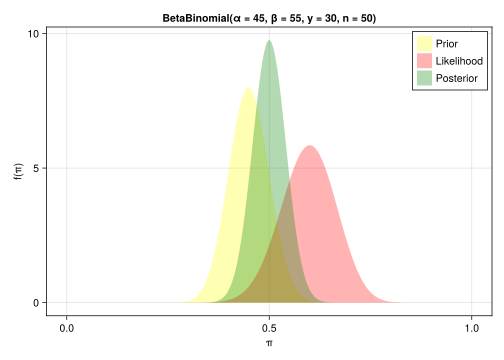

using Distributions
using CairoMakie
using DataFrames
using StatsBase
Bayes’ theorem
The conditional probability of an event \(A\) given an event \(B\) is given as
\[ P(A|B) = \frac{P(A,B)}{P(B)} \]
The joint probability \(P(A, B)\) of events \(A\) and \(B\) can, therefore, be expressed in two ways as \[ P(A,B) = P(A|B)P(B) = P(B|A)P(A) \]
This leads to Bayes’ theorem \[ P(A|B) = \frac{P(B|A)P(A)}{P(B)} \]
Bayes’ theorem lets us express the conditional probability \(P(A|B)\) through \(P(B|A)\).
Say we have a model \(M\) that describes how data \(D\) is generated based on some parameterization \(\Theta\) of the model. Let’s assume that we can express the model through a probability distribution \(P(D|\Theta, M)\). Before looking at the data, we might have some prior belief about the parameters \(\Theta\), which can be expressed by a probability function \(P(\Theta)\), the so-called prior distribution. After observing the data \(D\), we can then update our belief by using Bayes’ theorem
\[ P(\Theta|D, M) = \frac{P(D|\Theta, M)P(\Theta|M)}{P(D|M)} \]
The updated belief in light of the observed data \(D\) is called the posterior distribution.
Introduction
The purpose of probabilistic programming is to provide an easy way for inference of latent variables from observed data. This can be done using sampling (MCMC) or variational inference.
Probabilistic programs are usual functional or imperative programs with two added constructs [Gordon2014]
- assume/sample: draw values at random from distributions or replay
- observe/condition: condition values of variables in a program via observations
Instead of providing the posterior/joint probability/likelihood in functional form, they allow to provide a model that generates samples (by sampling from distributions).
Say program generates output \(y\) based on draws of latent variables \(x\). The chosen \(x\) are called the trace of the program. Given some observations \(y\), we want to draw inferences about which \(x\) have been used to generate the observed \(y\), i.e. we want to infer \(P(x|y)\).
A probabilistic program is a function consisting of a mix of stochastic and deterministic elements.
"""
plot prior, likelihood and posterior for BetaBinomial(α, β, y, n)
"""
function plot_beta_binomial(α, β, y, n)
x = range(0.0, 1.0; length = 1000)
prior = pdf.(Beta(α, β), x)
likelihood = pdf.(Binomial.(n, x), y)
scaling = sum(likelihood) / 1000.
likelihood ./= scaling
posterior = pdf.(Beta(α + y, β + (n - y)), x)
f,a,p = poly(Point2.(x, prior); color = (:yellow, 0.3), label = "Prior",
axis = (;title = "BetaBinomial(α = $(α), β = $(β), y = $(y), n = $(n))", xlabel = "π", ylabel = "f(π)"))
poly!(a, Point2.(x, likelihood); color = (:red, 0.3), label = "Likelihood")
poly!(a, Point2.(x, posterior); color = (:green, 0.3), label = "Posterior")
axislegend(a)
f
end
plot_beta_binomial(45, 55, 30, 50)┌ Warning: Found `resolution` in the theme when creating a `Scene`. The `resolution` keyword for `Scene`s and `Figure`s has been deprecated. Use `Figure(; size = ...` or `Scene(; size = ...)` instead, which better reflects that this is a unitless size and not a pixel resolution. The key could also come from `set_theme!` calls or related theming functions.
└ @ Makie ~/.julia/packages/Makie/iRM0c/src/scenes.jl:220
Approximating the posterior
Grid approximation
Want to get a sample of posterior \(f(\Theta | y)\) given prior and likelihood
- Define grid of possible \(\Theta\) values
- Evaluate prior \(p(\Theta)\) and likelihood \(L(\Theta|y)\) at those values
- Obtain discrete approximation of posterior by
- computing product \(p(\Theta) L(\Theta|y)\) at all grid values
- normalizing their sum to 1
- Randomly sample from grid values using discrete posterior as weights
prior(π) = pdf(Beta(45, 55), π)
likelihood(π) = pdf(Binomial(50, π), 30)
df = DataFrame(π = range(0.0, 1.0; length = 100))
df.prior = prior.(df.π)
df.likelihood = likelihood.(df.π)
df.posterior = df.prior .* df.likelihood
df.posterior = df.posterior / sum(df.posterior)
s = sample(df.π, Weights(df.posterior), 10000)
f, a, p = density(s; axis = (;xlabel = "π", ylabel = "P(π)"),
label = "simulation")
lines!(a, df.π, pdf.(Beta(75, 75), df.π);
label = "theoretical", linewidth = 2)
axislegend()
f┌ Warning: Found `resolution` in the theme when creating a `Scene`. The `resolution` keyword for `Scene`s and `Figure`s has been deprecated. Use `Figure(; size = ...` or `Scene(; size = ...)` instead, which better reflects that this is a unitless size and not a pixel resolution. The key could also come from `set_theme!` calls or related theming functions.
└ @ Makie ~/.julia/packages/Makie/iRM0c/src/scenes.jl:220While this works for low dimensions, the number of grid points grows exponentially with the number of dimensions.
If we knew the posterior probability, we could sample from it.
The posterior probability is proportional to the product of the prior and the likelihood, two functions which we know. What we do not know is the normalization constant that ensures that the posterior probability integrates to 1.
In the grid approximation above we normalized the posterior by summing over all grid points. But as we saw above, this becomes impossible for high dimensional parameter spaces.
Markov-chain Monte Carlo
Markov-chain Monte Carlo (MCMC) is a method to sample from (unnormalized) probability distributions.
Assume we have a system with \(n\) states, together with a probabilistic rule that specifies how the system moves from the current state \(s(t)\) to a new state \(s(t+1)\), where \(t\) designates the discrete time.
This rule can be specified using a so-called transition matrix \(T_{ij}\) that gives the probability to transition from state \(i\) to state \(j\). The probability to move to state \(j\) at time \(t+1\) only depends on the current state at time \(t\), and is independent of the previous history. Such a system is called a first-order Markov chain.
As the system needs to end in one of the available states, we have
\[ \sum_j T_{ij} = 1 \]
Let \(\pi_i^t\) be the probability to be in some state \(i\) at time \(t\). The probability to end in state \(j\) at time \(t+1\) is then
\[ \pi_j^{t+1} = \sum_i \pi_i^t T_{ij} \]
If a condition called detailed balance holds,
\[ \pi_i T_{ij} = \pi_j T_{ji} \]
then we have
\[ \pi_j^{t+1} = \sum_i \pi_i^{t} T_{ij} = \sum_i \pi_j^{t} T_{ji} = \pi_j^{t} \sum_i T_{ji} = \pi_j^{t} \]
i.e. the chain is stationary
In the Metropolis-Hastings algorithm, the transition probability \(T_{ij}\) is decomposed into a proposal probability \(P_{ij}\) and an acceptance probability \(A_{ij}\)
\[ T_{ij} = P_{ij} A_{ij} \]
The condition for detailed balance thus becomes
\[ \pi_i P_{ij} A_{ij} = \pi_j P_{ji} A_{ji} \]
or
\[ \frac{A_{ij}}{A_{ji}} = \frac{\pi_j P_{ji}}{\pi_i P_{ij}} \]
This condition can be fulfilled by choosing
\[ A_{ij} = \min \left( \frac{\pi_j P_{ji}}{\pi_i P_{ij}}, 1 \right) \]
Metropolis-Hastings algorithm:
Given prior \(P(\Theta)\) and likelihood \(L(\Theta|y)\), want to draw samples from posterior
- Draw \(\Theta^1\) from prior
- for t = 1 .. N
- propose a new \(\Theta'\) by drawing from proposal probability \(Q(\Theta'|\Theta^t)\)
- compute acceptance probability \(A\) \[ A = \min \left(\frac{P(\Theta')L(\Theta'|y) Q(\Theta^t|\Theta')}{P(\Theta^t)L(\Theta^t|y) Q(\Theta'|\Theta^t)}, 1 \right) \]
- set \(\Theta^{t+1} = \Theta'\) with probability \(A\), otherwise set \(\Theta^{t+1} = \Theta^t\)
In the Metropolis algorithm, the proposal probability is taken to be symmetric, i.e. \[ Q(\Theta'|\Theta^t) = Q(\Theta^t|\Theta') \]
In the independence sampling algorithm, the proposal is independent of the current state, i.e. \[ Q(\Theta'|\Theta^t) = Q(\Theta') \] and \[ Q(\Theta^t|\Theta') = Q(\Theta^t) \]
Beta-binomial problem using independence sampling
Here we solve the Beta-Binomial problem using independence sampling.
# solve Beta-Binomial problem using independence sampling
logprior(π) = logpdf(Beta(45, 55), π)
loglik(π) = logpdf(Binomial(50, π), 30)
randproposal(Θ_c) = rand(Beta(2,2))
logproposal(Θ, Θ_c) = logpdf(Beta(2,2), Θ)
function metropolis_hastings(logprior, loglik, initial, randproposal, logproposal, n)
current = initial
samples = [current]
accepted = 0
for i in 1:n
proposed = randproposal(current)
lp_current = logprior(current) + loglik(current) + logproposal(proposed, current)
lp_proposed = logprior(proposed) + loglik(proposed) + logproposal(current, proposed)
Δ = lp_proposed - lp_current
if Δ > 0.0 || rand() < exp(Δ)
current = proposed
accepted += 1
end
push!(samples, current)
end
println("Acceptance ratio:", accepted/n)
samples
end metropolis_hastings (generic function with 1 method)@time samples = metropolis_hastings(logprior, loglik, 0.5, randproposal, logproposal, 10_000);Acceptance ratio:0.1933
0.022623 seconds (37.44 k allocations: 3.380 MiB, 85.85% compilation time)f = Figure(;size = (800, 400))
ax1, plt1 = density(f[1,2], samples; axis = (;title = "Density", xlabel = "π", ylabel = "P(π)"), label = "simulation")
lines!(ax1, df.π, pdf.(Beta(75, 75), df.π); label = "theoretical", linewidth = 2)
axislegend(ax1)
ax2, plt2 = lines(f[1,1], samples; alpha = 0.4, axis = (;title = "Traceplot", xlabel = "Samples", ylabel = "π"))
f┌ Warning: Found `resolution` in the theme when creating a `Scene`. The `resolution` keyword for `Scene`s and `Figure`s has been deprecated. Use `Figure(; size = ...` or `Scene(; size = ...)` instead, which better reflects that this is a unitless size and not a pixel resolution. The key could also come from `set_theme!` calls or related theming functions.
└ @ Makie ~/.julia/packages/Makie/iRM0c/src/scenes.jl:220Beta-Binomial problem using constrained MCMC: Change of variables
In the Beta-Binomial problem, the parameter of interest is constrained to be within the unit interval, \(\pi \in [0,1]\). Above we sampled \(\pi\) from a Beta distribution which automatically fulfilled this constraint. Often it is more convenient to sample from \((-\infty, + \infty)\) and transform into the interval \([0,1]\). The transformation needs to be a differentiable function with differentiable inverse (“bijector”).
To transform between \(x \in [-\infty, + \infty]\) and \(y \in [0,1]\), we can use the logistic function
\[ y = \sigma(x) = \frac{1}{1 + \exp(-x)} \]
and its inverse
\[ x = \sigma^{-1}(y) = \log \left( \frac{y}{1-y} \right) \]
Conservation of probability mass requires
\[ P_x(x)dx = P_y(y)dy \]
\[ P_x(x) = P_y(y(x))\frac{dy(x)}{dx} = P_y(\sigma(x))\frac{d \sigma(x)}{dx} \]
\[ \sigma'(x) = \sigma(x) (1 - \sigma(x)) = \sigma(x) \sigma(-x) \]
Instead of drawing \(y\) from \([0,1]\) we draw \(x\) from \((-\infty, +\infty)\) using some proposal distribution. In the equation for the acceptance probability, we then replace each occurrence of \(P_y(y)\) with \(P_x(x) = P_y(y = \sigma(x)) \sigma'(x)\).
# solve Beta-Binomial problem using constrained MCMC
using LogExpFunctions
logistic(x) = 1 / (1 + exp(-x))
logit(π) = log(π / (1 - π))
logprior(π) = logpdf(Beta(45, 55), π)
loglik(π) = logpdf(Binomial(50, π), 30)
logjac(x) = -(log1pexp(x) + log1pexp(-x))
# draw Θ ∈ R
randproposal(Θ_c) = rand(Normal(Θ_c, 0.5))
logproposal(Θ, Θ_c) = logpdf(Normal(Θ_c, 0.5), Θ)
function metropolis_hastings(logprior, loglik, logjac, initial, randproposal, logproposal, n)
current = initial
samples = [current]
accepted = 0
for i in 1:n
proposed = randproposal(current)
current_ = logistic(current)
proposed_ = logistic(proposed)
lp_current = logprior(current_) + loglik(current_) + logjac(current) + logproposal(proposed, current)
lp_proposed = logprior(proposed_) + loglik(proposed_) + logjac(proposed) + logproposal(current, proposed)
Δ = lp_proposed - lp_current
if Δ > 0.0 || rand() < exp(Δ)
current = proposed
accepted += 1
end
push!(samples, current)
end
println("Acceptance ratio:", accepted/n)
samples
end metropolis_hastings (generic function with 2 methods)@time samples2 = metropolis_hastings(logprior, loglik, logjac, 0.0, randproposal, logproposal, 10_000);Acceptance ratio:0.365
0.002972 seconds (45 allocations: 327.914 KiB)samples2 = logistic.(samples2);
f = Figure(;size = (800, 400))
ax1, plt1 = density(f[1,2], samples2; alpha = 0.2, axis = (;title = "Density", xlabel = "π", ylabel = "P(π)"), label = "simulation")
lines!(ax1, df.π, pdf.(Beta(75, 75), df.π); label = "theoretical", linewidth = 2)
axislegend(ax1)
ax2, plt2 = lines(f[1,1], samples2; alpha = 0.4, axis = (;title = "Traceplot", xlabel = "Samples", ylabel = "π"))
f┌ Warning: Found `resolution` in the theme when creating a `Scene`. The `resolution` keyword for `Scene`s and `Figure`s has been deprecated. Use `Figure(; size = ...` or `Scene(; size = ...)` instead, which better reflects that this is a unitless size and not a pixel resolution. The key could also come from `set_theme!` calls or related theming functions.
└ @ Makie ~/.julia/packages/Makie/iRM0c/src/scenes.jl:220
see also: https://theoryandpractice.org/stats-ds-book/distributions/change-of-variables.html
References
Gordon2014, ‘Probabilistic programming’ https://dl.acm.org/doi/10.1145/2593882.2593900
BayesRules!
Further reading
‘An Introduction to Probabilistic Programming’ https://arxiv.org/pdf/1809.10756